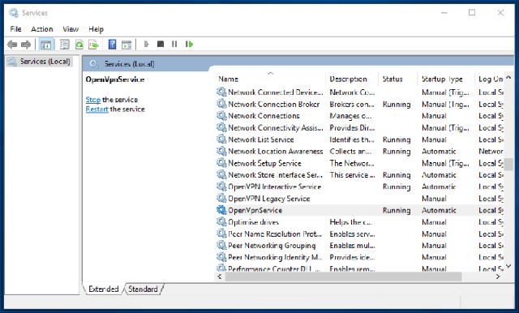

In order to get OpenVPN GUI to auto-start and auto-connect on boot, we need to pick a single configuration for a particular location that we wish to connect on every boot.
For the purpose of this guide, I am going to use PrivateVPN’s OpenVPN-TUN-UDP configuration for India.
Step 1 - Editing your OpenVPN client configuration
Open .ovpn file in Notepad application, look for # Crypto section and make the following changes as seen in the image below:
auth-user-pass user.auth
auth-retry nointeract
auth-nocache
Save and close the .ovpn file.
Step 2 - Storing your PrivateVPN.com credentials in a file
Open Notepad application and type your PrivateVPN username in first line and password in second, save the file as user.auth.
Step 3 - Import edited .ovpn file and user.auth file to OpenVPN config folder
Navigate to Program files - OpenVPN - config folder of your main Windows installation. Copy your edited .ovpn file and user.auth there. When prompted for Administrative permission, grant it to Continue.
Step 4 - Configuring OpenVPN service to start automatically on boot
Start Run application from Start Menu or by using keyboard shortcut combination Ctrl+R and input services.msc in the text field there and click OK.
Locate OpenVpnService (Not OpenVPN Legacy Service or OpenVPN Interactive Service) and double-click on it.

A dialog box appears, change Startup type to Automatic, and click Apply followed by OK. That is all. OpenVPN configuration file should connect right away and on every boot automatically.
Note: You are not required to use OpenVPN GUI client any more. ‘OpenVpnService’ would automatically connect you to respective PrivateVPN OpenVPN server on boot.
You are now done configuring OpenVPN client as service on Windows OS. Navigate to PrivateVPN.com to check if you are connected to VPN also do a reboot to make sure it persists.
Enjoy!